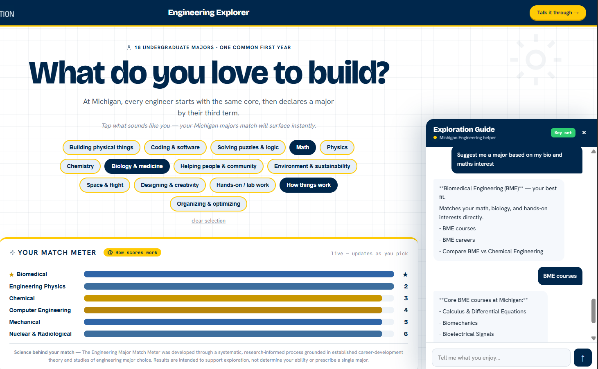
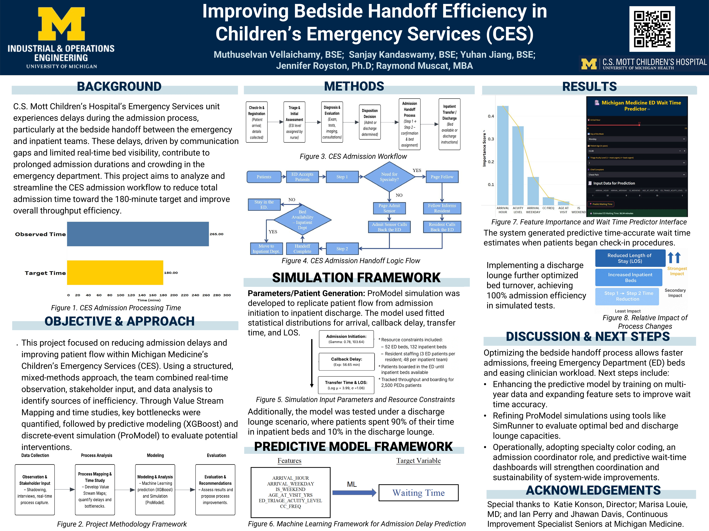
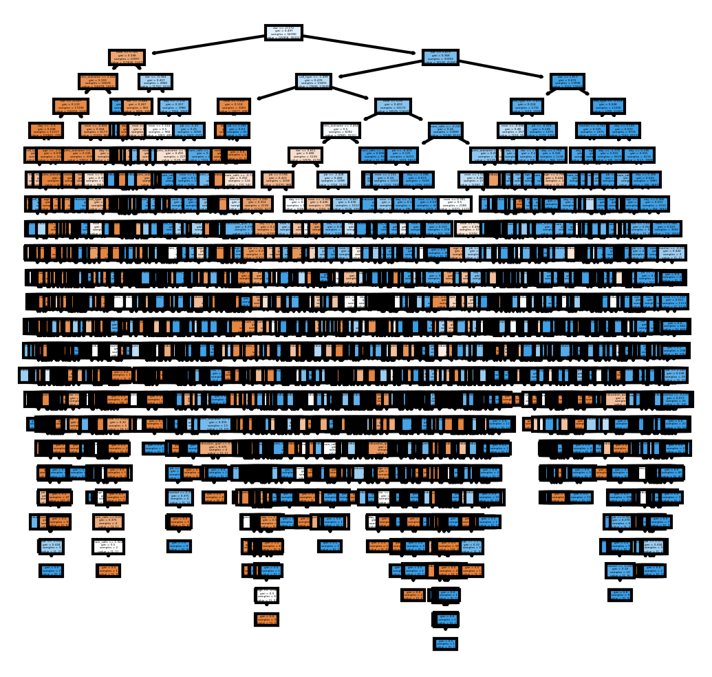

Built Engineering Explorer, an interactive web tool powered by the Claude API to help prospective students explore College of Engineering majors through natural language conversation. Designed the prompt architecture to handle open-ended exploratory questions high school students typically ask, from broad interest-based queries to specific major comparisons.
Integrated a RAG pipeline using LangChain to orchestrate document ingestion and retrieval, with ChromaDB as the vector store for UMich course catalogs and program information, enabling Claude to ground responses in actual curriculum data rather than generic advice. Deployed as a single-page web app with a Python backend, hosted on a U-M server via ITS Container Service for official university access.

A discrete-event simulation of Michigan Medicine's Emergency Department CT workflow, built during my internship at the CHEPS. The ED CT scanner was a critical resource that patients across acuity levels competed for, and periodic downtime created cascading effects hard to reason about with spreadsheets alone.
Built the simulation in Python using queueing models and stochastic scenarios to capture variability in patient arrivals, acuity mix, scan durations, and equipment downtime, calibrated against historical ED data. Designed and ran over 100 A/B experiments with statistical hypothesis testing to evaluate operational strategies under different constraints, identifying changes worth roughly 24 hours of daily bed capacity. Delivered results to hospital leadership through interactive Tableau dashboards that let clinical and operational leaders explore trade-offs directly rather than relying on static reports.

A process improvement and simulation project for C.S. Mott Children's Hospital's Emergency Services (CES), completed as part of my IOE 591 course at Michigan Medicine under Ray Muscat and Jhawan Davis, Continuous Improvement Specialists at Michigan Medicine. The CES unit had admission times averaging 250 minutes against a 180-minute target, driven by communication gaps and limited bed visibility at the bedside handoff.
Working with a team of three, I used Value Stream Mapping and time studies to quantify delays across each handoff step, then built a discrete-event simulation of patient flow using fitted statistical distributions, tracking throughput for 2,500 pediatric patients under real resource constraints. I also trained an XGBoost model on a full year of ED patient records to predict ED wait times, deployed as an interactive tool for check-in staff.
The analysis identified changes worth 20 minutes of ED handoff reduction and recommended a discharge lounge sized at 10% of inpatient capacity, projected to cut boarding time by 30 minutes. Results were presented to Michigan Medicine leadership.

This project focused on predicting customer subscription likelihood for an insurance company’s telemarketing campaigns using historical structured data. I built a full ML pipeline that included cleaning and preprocessing, exploratory data analysis to uncover patterns, and handling class imbalance. Models such as Logistic Regression, KNN, Decision Tree, Random Forest, and XGBoost were trained, with optimization through feature engineering and hyperparameter tuning using stratified k-fold validation. XGBoost delivered the best performance with an F1 score corresponding to ~85% accuracy, and feature importance analysis revealed the hierarchy of predictors. The solution improved targeting efficiency and drove a 17% boost in sales performance through automated lead prioritization.
{kind=link}
{kind=link}
{kind=link}
{kind=link}